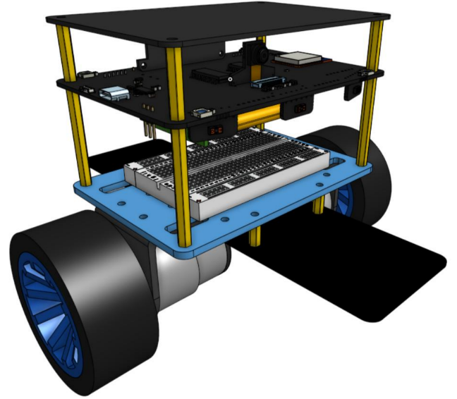
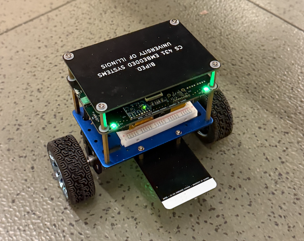

Real-Time Control for a Self-Balancing Biped Robot
Built an embedded real-time control stack for a self-balancing biped robot, integrating sensing, state estimation, periodic scheduling, filtering, and closed-loop motor actuation.
Overview
This course project focused on the embedded systems and control software required for a self-balancing biped robot. The main challenge was not only to read motion-related sensor data, but also to maintain a stable periodic control loop that could estimate robot posture and respond quickly enough to keep the system balanced under changing physical conditions.


The implementation was organized around real-time tasks for sensor acquisition, state update, control computation, and motor output. IMU, accelerometer, and gyroscope data were processed continuously and combined with filtering methods to improve attitude estimation. This allowed the control software to maintain a more stable representation of robot orientation before generating motor commands.
On top of this sensing pipeline, the project used PID-based feedback control to convert posture error into actuator commands. A central engineering goal was to coordinate multiple periodic tasks under fixed timing constraints so that sensing, estimation, and control remained synchronized. The project provided practical experience in embedded scheduling, low-level control software, and the interaction between real-time systems and physical robot dynamics.